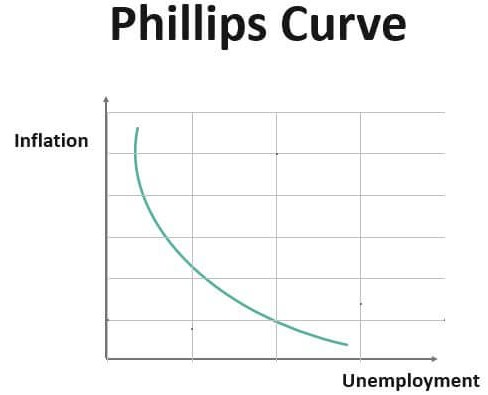

Introduction
Notes: All images displayed on this page are free-use materials, unless otherwise indicated by a specific credit.
Backgrounds
- The relationship between inflation and unemployment has long constituted a central issue in the field of macroeconomics. These two indicators are not merely statistical constructs but rather fundamental determinants that directly affect the standard of living of households and the overall stability of society. Inflation reflects the purchasing power of money and exerts a profound influence on the decision-making processes of households and firms, while unemployment represents the state of labor market conditions and is closely associated with household income and the productive capacity of the economy. Historically, the evolution of these two variables has frequently posed conflicting challenges for policymakers. For example, expansionary policies may succeed in reducing unemployment in the short run, yet they simultaneously raise the likelihood of accelerating inflation. Conversely, policies aimed at containing inflation often depress aggregate demand, thereby heightening the risk of increased unemployment. Thus, reconciling the goals of price stability and full employment has consistently been a central concern in both economic theory and policy practice. The U.S. Federal Reserve’s explicit commitment to a “dual mandate” of price stability and maximum employment exemplifies this tension. Moreover, this dual mandate extends beyond considerations of economic efficiency alone, carrying critical implications for social cohesion and political stability. An uncontrolled surge in inflation can undermine household welfare and destabilize everyday life, while persistently elevated unemployment can exacerbate inequality, fuel political unrest, and highlight the need for a comprehensive theoretical and empirical understanding of their dynamics for effective policy.

- As a classical contribution to this theme, Phillips (1958) demonstrated the existence of a stable negative correlation between wage growth and the unemployment rate, thereby presenting the important insight that the balance of supply and demand in the labor market is directly linked to wage fluctuations. His study was based on long-term data from the United Kingdom, but the result came to be regarded as a general phenomenon observable in many countries. Subsequently, Samuelson and Solow (1960), through an empirical study using U.S. data, generalized Phillips’s finding into a trade-off relationship between inflation and unemployment, emphasizing the possibility of applying this relationship to economic policy and suggesting that policymakers could “choose” a desirable combination of the two. This interpretation had a major impact on macroeconomic policy debates at the time, but the stability of the relationship was questioned early on, and a series of theoretical objections soon emerged. Muth (1961), with the rational expectations hypothesis, challenged the traditional adaptive expectations framework by assuming that agents form expectations consistent with the underlying economic model. Furthermore, Sargent and Wallace (1975) advanced the policy ineffectiveness proposition, arguing that anticipated monetary policy has no lasting impact on real economic activity, and Lucas (1976) added the critique that statistically observed macroeconomic relationships may shift depending on the prevailing policy rule. These arguments highlighted the limitations of using the Phillips curve directly for policy purposes and led to the understanding that there is no sustained long-run trade-off between inflation and unemployment, with the unemployment rate converging to its natural rate. At the same time, since the neoclassical framework assuming perfectly flexible prices could not sufficiently explain short-run business cycle fluctuations, the need for more realistic models increased. Against this background, New Keynesian models such as the price adjustment cost model by Rotemberg (1982) and the stochastic price-setting model by Calvo (1983) emerged, demonstrating that by explicitly incorporating nominal rigidities, a short-run trade-off between inflation and unemployment could indeed exist. These models were subsequently systematized by Woodford (2003), forming the standard theoretical foundation of modern monetary policy analysis and becoming widely referenced in the practice of central banking.

- On the empirical side, the strength and stability of the relationship between inflation and unemployment have consistently been a subject of debate. In particular, recent studies indicate that the Phillips curve does not function as a fixed empirical regularity but rather changes its shape depending on the historical period and economic environment. Ball and Mazumder (2011), using U.S. data, reported a flattening of the Phillips curve and demonstrated that the impact of unemployment fluctuations on inflation has weakened substantially compared to the past. This finding is consistent with the anchoring of inflation expectations and the increased credibility of monetary policy, and it has been recognized as a factor contributing to the stability of inflation. Blanchard (2016) focused on U.S. inflation dynamics and emphasized that, unlike in earlier periods, changes in unemployment no longer move inflation rates as strongly, making it more difficult for policymakers to rely on the Phillips curve. Furthermore, Stock and Watson (2019) showed that the predictability of U.S. inflation has declined markedly in recent years and concluded that traditional Phillips curve–based forecasting models fail to deliver sufficient accuracy. Hazell et al. (2022), using state-level panel data, provided empirical evidence that the relationship between inflation and unemployment changes nonlinearly depending on whether the economy is subject to demand or supply shocks. Their research is important in that it highlights how relationships that appear blurred in aggregate macroeconomic data can become more clearly identifiable at the regional level. Taken together, this body of work suggests that the Phillips curve does not simply operate as a stable relationship in which “lower unemployment leads to higher inflation,” but instead varies significantly depending on economic conditions, the nature of shocks, and policy regimes. Therefore, analyzing the relationship between inflation and unemployment requires a flexible approach that goes beyond reliance on static empirical regularities and takes into account institutional contexts and the characteristics of shocks.
- In recent years, with the advancement of machine learning, there has been a rapid increase in attempts to apply data-driven methods to the forecasting of key macroeconomic variables such as inflation and unemployment. These methods have attracted attention because they offer the potential to capture nonlinearities and complex interdependencies that traditional linear regression and time-series models fail to detect. Medeiros et al. (2021), using U.S. inflation data, employed Random Forests and Least Absolute Shrinkage and Selection Operator (LASSO) in their analysis and reported predictive accuracy superior to that of conventional AutoRegressive (AR) and factor models, thereby demonstrating that machine learning can hold an advantage over traditional approaches. This study provided results directly relevant to improving inflation forecasts used in practice by central banks and other policymakers, underscoring its empirical significance. Furthermore, Gogas et al. (2021) examined unemployment in the euro area as a whole and compared machine learning techniques with traditional time-series models, showing that machine learning has an advantage in short-term forecasting. They found that while Random Forests and Support Vector Machines (SVMs) achieve higher prediction accuracy, challenges remain regarding model interpretability and policy applicability, highlighting the difficulty of applying machine learning directly to policy operations. This issue points to a fundamental challenge in macroeconomic research—namely, how to balance predictive accuracy with theoretical consistency and policy relevance. In addition, Magazzino et al. (2025) analyzed unemployment across 23 advanced economies using artificial neural networks and demonstrated that factors such as GDP, labor productivity, demographic dynamics, and even AI-driven technological innovation are major determinants of unemployment fluctuations. Their results suggest that unemployment dynamics depend not only on cyclical factors but also heavily on structural and technological elements. Taken together, these studies underscore that while machine learning has proven effective for forecasting macroeconomic variables, they also highlight the need to overcome challenges related to model transparency and practical policy applicability.
- However, important challenges remain in this line of research. First, much of the existing literature has focused on either inflation or unemployment in isolation, and there are relatively few attempts to analyze both variables in an integrated manner and systematically capture their interactions. In fact, although inflation and unemployment should be considered simultaneously from both theoretical and policy perspectives, many empirical studies have tended to concentrate on only one side. Second, while many studies emphasize the evaluation of predictive accuracy, frameworks that combine regime classification with regression-based forecasting have not been sufficiently developed. For example, only a limited number of studies identify regimes such as high- and low-inflation periods or recessions and expansions, and then evaluate predictive performance within each of these states. Third, much of the data used are drawn from commercial databases or restricted sources, which imposes constraints on transparency and reproducibility, although the use of open data could create an environment in which a broader range of researchers and policymakers can more easily replicate and extend results. Few studies, however, have explicitly incorporated this consideration. Fourth, the linear regression models that continue to play a central role in policy analysis, such as Ordinary Least Squares (OLS) and Vector Auto Regressive (VAR), are rarely compared directly with machine learning methods within a unified framework. This lack of comparison has limited the perspective needed for policymakers to understand how traditional and modern methods might be used in a complementary fashion, and the absence of such evaluations represents a major obstacle to assessing the practical applicability of machine learning in real-world policy contexts. Therefore, future research must adopt a more comprehensive approach that addresses not only predictive accuracy but also interpretability and policy relevance at the same time.
- Based on the foregoing discussion, the objectives of this study can be organized into four main points. First, it aims to conduct an integrated analysis of inflation and unemployment by comparing traditional regression models (OLS, VAR, Elastic Net) with machine learning techniques (Naïve Bayes, decision trees, SVM, and neural networks) within a unified framework, thereby evaluating both predictive accuracy and interpretability. Second, it seeks to identify macroeconomic regimes through clustering and principal component analysis, and to apply classification and regression approaches in an integrated manner so as to examine simultaneously “where the economy currently stands” and “how it is likely to evolve.” Third, it will systematically analyze the dynamic causal relationship and regime dependence between inflation and unemployment using Granger causality tests and local projection methods. Fourth, by utilizing open and reproducible data sources such as the FRED API, the BLS API, and the World Bank API, the study aims to ensure transparency and reproducibility of the analysis and to provide a research platform that can be replicated and extended by a broad range of readers, including academic researchers and policymakers. Through these four pillars, this study aspires to bridge traditional research on the Phillips curve with contemporary machine learning approaches, thereby offering a new understanding of the relationship between inflation and unemployment. In addition, the study emphasizes not only the re-examination of existing findings but also the direct comparison between machine learning and regression analysis, with the explicit goal of deriving practical implications for policy applications. In light of this, the study sets forth 10 research questions designed to reconsider the relationship between inflation and unemployment from multiple perspectives, beginning with the existence of a short-run trade-off and expanding to assess regime dependence and the role of macroeconomic factors. Furthermore, by comparing the predictive performance and interpretability of machine learning and traditional models, they also delve into the causal direction of the relationship and the dynamic effects of shocks. Accordingly, this study seeks to provide a systematic framework that comprehensively addresses both theoretical and empirical challenges.
Research Questions
Is a short-run trade-off between inflation and unemployment statistically observable?
To what extent does the Phillips curve relationship vary across business-cycle phases (recessions and expansions) and policy regimes (e.g., the zero lower bound period or the COVID-19 era)?
How do macroeconomic factors extracted through principal component analysis (PCA) affect the dynamics of inflation and unemployment?
Does regime identification based on data-driven clustering align with historical episodes such as stagflation or the post–global financial crisis recovery?
To what extent can simple classification models such as Naïve Bayes and decision trees accurately identify periods of high inflation or high unemployment?
Does the support vector machine (SVM) improve regime-classification accuracy compared with simpler classifiers such as Naïve Bayes and decision trees?
How do traditional regression models (OLS, VAR, Elastic Net) and machine learning models (SVM, neural networks) differ in their performance when forecasting inflation and unemployment one, three, and six months ahead?
Can performance differences across forecasting models be judged statistically significant using tests such as the Diebold–Mariano test?
According to Granger causality tests, what is the causal direction between inflation and unemployment (inflation → unemployment or unemployment → inflation)?
Through local projection analysis, how do demand shocks and supply shocks dynamically affect inflation and unemployment?